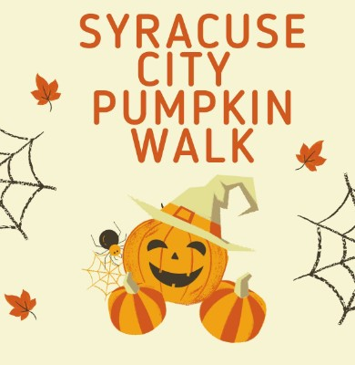
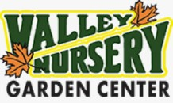

Upcoming Events
OCTOBER 27-29, 2022
7PM-10PM
FOUNDERS PARK
FREE ADMISSION
United We Stand!
Russon Mortuary & Crematory
Our Family serving your family for over 65 years
1585 W. 300 S. Syracuse, UT 84075
(801) 825-3655
Valley Nursery
Four Generations growing with Weber County
6484 S. 2000 E. Syracuse, UT 84075
(801) 479-6060Rejuvu Day Spa and Beauty Haven
Back to Self Care
185 N. 2000 W. Syracuse, UT 84075
(801) 525-8348
Syracuse
64°F
Partly Cloudy ⛅
H: 72° L: 44°
Precipitation: 1%
Humidity: 75%
Wind: 6 mph
Come see how joining will benefit you, your business, and your community!
News Release
Syracuse High Retail Center
Currently under construction, a new retail center is popping up by Syracuse High School on 1863 West 700 South. This location will have three companies that has been tailored towards the students at Syracuse High School: Quench It Soda, Scratch Burger, and The Crepery.